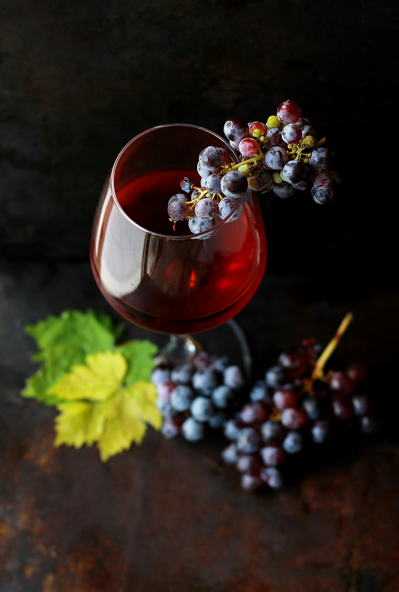
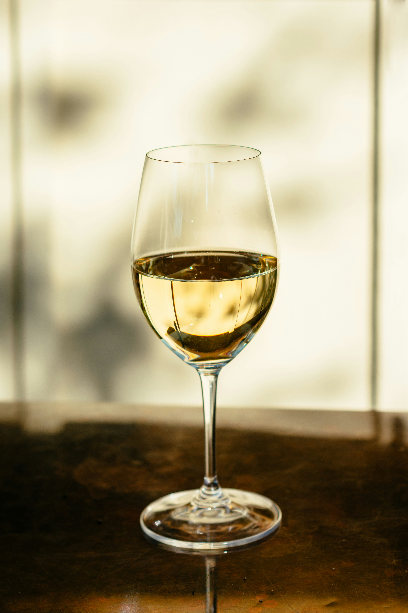
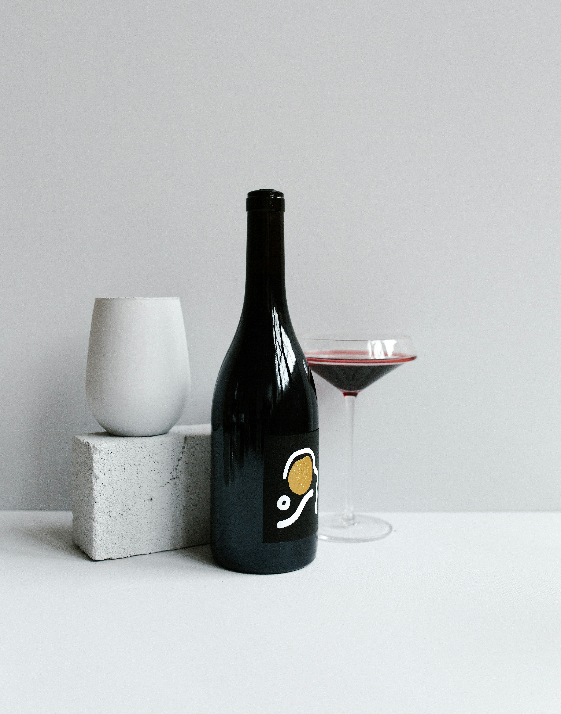

Galeria de Vinhos
| tipo | exemplos de vinhos | características | imagem |
|---|---|---|---|
| Tinto | Malbec, Cabernet Sauvignon e Merlot | Possui coloração avermelhada e sabores que podem variar de frutados a encorpados. |  |
| Branco | Chardonnay, Sauvignon Blanc e Riesling | Apresenta coloração clara e pode ter aromas cítricos, frutados e florais. |  |
| Rosé | Rosé de Malbec, Rosé de Syrah e Rosé de Grenache | Possui tonalidade rosada e sabores que podem ser leves, frutados e refrescantes. |  |
| Espumante | Prosecco, Champagne e Moscatel | Possui borbulhas e diferentes níveis de doçura, podendo ser seco ou doce. | |
| Fortificado | Vinho do Porto, Jerez e Madeira | Recebe adição de aguardente vínica durante ou após a fermentação. |  |